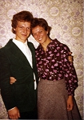
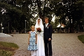

Ingegerd Maria Dufberg
Musiker, egenföretagere, Fredmans Musik AB, Västra Vingåker, Sörmland.
| Far: | Roland Robert Barak Dufberg (1920 - 1983) |
|---|
| Mor: | Svea Margareta Larsson (1921 - 1989) |
|---|
| Född: | 1953-05-21 Vingåker, Västra Vingåkers fs, Vingåkers kn. | |
|---|
| Levde: | 1971 Storg 65, Vingåker, Västra Vingåkers fs, Vingåkers kn. [1] | 1953-05-21
Dufberg, Ingegerd Maria
Storg 65
643 00 Vingåker
Kyrkobokförd i Västra Vingåker (Vingåkers kn, Södermanlands län, Södermanland), distrikt 03, fastighet 20120. Mantalsskriven på samma ort.
Född 21/5 1953 i Västra Vingåker (Södermanlands län, Södermanland).
--------------
Källa: Mtl Södermanlands län 1971
|
|---|
| Vigsel: | 1980-06-28 Vingåker, Västra Vingåkers fs, Vingåkers kn (D). [2] |
|---|
| Levde: | 1981 Ekeskogsv 14, Skövde, Skövde fs, Skövde kn. [3] |
|---|
| Levde: | 1991 Daggkåpan 81, Daggkåpev 13 B, Skövde, Skövde fs, Skövde kn. [2] |
|---|
| Levde: | 2008 Storgatan 65, Västra Vingåkers fs, Vingåkers kn. [4] |
|---|
| Skrivna på: | 2009 Storgatan 54, Vingåker, Västra Vingåkers fs, Vingåkers kn. [4] |
|---|
| Levde: | 2016 Veddalavägen 10, Vingåker, Västra Vingåkers fs, Vingåkers kn. [5] |
|---|
| Barn: |
|---|
| Sara Karolina Fredman (1984 - ) |
| Jacob Mattias Fredman (1987 - ) |
| Eric Michael Fredman (1989 - ) |
| Hanna Debora Fredman (1993 - ) |
Personhistoria
| Årtal | Ålder | Händelse |
|---|
| 1953 |
|
Födelse 1953-05-21 Vingåker, Västra Vingåkers fs, Vingåkers kn |
| 1954 |
1 år |
Maken Nils Roger Granström Fredman föds 1954-12-23 Åsträsk, Kalvträsk fs, Burträsk sn |
| 1971 |
|
Levde 1971 Storg 65, Vingåker, Västra Vingåkers fs, Vingåkers kn [1] |
| 1980 |
27 år |
Vigsel Nils Roger Granström Fredman 1980-06-28 Vingåker, Västra Vingåkers fs, Vingåkers kn (D) [2] |
| 1981 |
|
Levde Nils Roger Granström Fredman 1981 Ekeskogsv 14, Skövde, Skövde fs, Skövde kn [3] |
| 1983 |
30 år |
Fadern Roland Robert Barak Dufberg dör 1983-12-22 Vingåker, Västra Vingåkers fs, Vingåkers kn [6] |
| 1984 |
30 år |
Dottern Sara Karolina Fredman föds 1984-04-15 Skövde, Skövde fs, Skövde kn [2] |
| 1987 |
34 år |
Sonen Jacob Mattias Fredman föds 1987-06-01 Skövde, Skövde fs, Skövde kn [2] |
| 1989 |
35 år |
Sonen Eric Michael Fredman föds 1989-03-10 Skövde, Skövde fs, Skövde kn [2] |
| 1989 |
35 år |
Modern Svea Margareta Larsson dör 1989-05-11 Vingåker, Västra Vingåkers fs, Vingåkers kn [7] |
| 1991 |
|
Levde Nils Roger Granström Fredman 1991 Daggkåpan 81, Daggkåpev 13 B, Skövde, Skövde fs, Skövde kn [2] |
| 1993 |
39 år |
Dottern Hanna Debora Fredman föds 1993-04-05 Örebro stad |
| 2008 |
|
Levde Nils Roger Granström Fredman 2008 Storgatan 65, Västra Vingåkers fs, Vingåkers kn [4] |
| 2009 |
|
Skrivna på Nils Roger Granström Fredman 2009 Storgatan 54, Vingåker, Västra Vingåkers fs, Vingåkers kn [4] |
| 2016 |
|
Levde Nils Roger Granström Fredman 2016 Veddalavägen 10, Vingåker, Västra Vingåkers fs, Vingåkers kn [5] |
Källor
| [1] | Mtl Södermanlands län 1971 |
| |
| | |
| [2] | Mantalslängd 1991, Skaraborgs län |
| |
| | |
| [3] | Mtl Skaraborgs län 1981 |
| |
| | |
| [4] | www.hitta.se |
| |
| | |
| [5] | https://www.ratsit.se/sok/avancerat/person |
| |
| | |
| [6] | SPAR 90, RTB 84 |
| |
| | |
| [7] | SPAR 90, RTB 89 |
| |
|
|  |
| 1977-09-17. Roger Fredman och Ingegerd Dufberg vid Viveka och Åkes vigsel i Skellefteå. |
| |
|  |
| 1980-06-28. Brudparet Ingegerd Dufberg och Roger Fredman. |
|
{kind=link}
{kind=link}